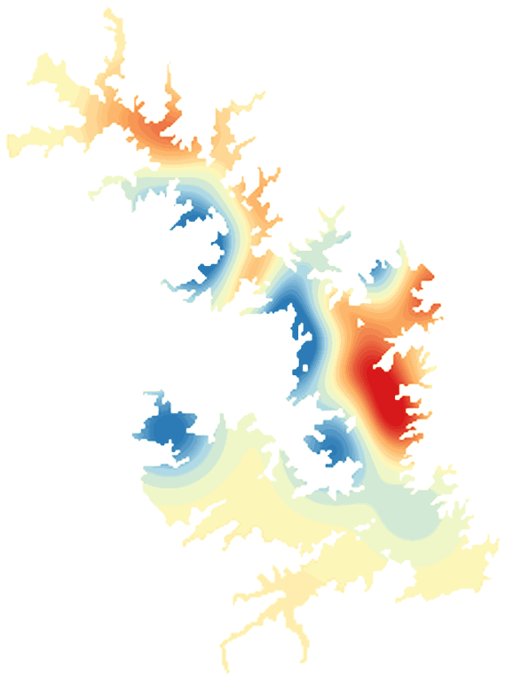

LakeScope › GA
Lake Thurmond (Clarks Hill) today
Updated 2026-11-14 - Atlas Labs
Clear water, 62°F water, level falling, 7 ft below normal, calm this morning.
Water level
317.66 ft
USGS gauge 02193900 - 2026-11-14
7-day trend: falling (-0.43 ft). Compared with normal for this date: -7.0 ft (same weeks, 2016-2025).
Water clarity and algae
Clear water Last clear view: about a week ago. 1 cloudy pass since.
Surface temperature
62°F
seen from space on 2026-11-11

Weather, next 3 days
| Day | Sky | High / low | Wind | Rain |
|---|---|---|---|---|
| Saturday | Sunny | 58 / 37°F | 5 mph NW | 0% |
| Sunday | Areas Of Frost then Sunny | 58 / 39°F | 2 mph N | 0% |
| Monday | Mostly Sunny | 58 / 40°F | 5 mph NE | 0% |
Sunrise 07:00 - sunset 17:26 - Waxing crescent. National Weather Service.
Get the LakeScope app: alerts and the 3-D view of Lake Thurmond (Clarks Hill)